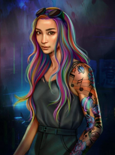

Épopée dans le futur, Marie Lu nous propose une science-fiction. Jouer, chasser, hacker, et le pion apparaît. Warcross est le livre incontournable de Marie Lu.
Le roman parle de Emika, 18 ans, qui a beaucoup de dettes. Elle y survit en tant que chasseuse de primes dans la ville de Manhattan. En voulant fuir cette réalité, elle utilise ses lunettes connectées et plonge dans un jeu de réseau. C'est le jeu le plus jamais inventé : Warcross. Mais en voulant pirater la finale du grand tournoi de l’année, elle est repérée par le grand créateur du jeu : Hideo Tanaka. Cependant Emika sent que ses intentions dépassent ce qu’il a voulu créer. Elle sait qu'il pourrait dépasser les limites entre le réel et le virtuel.
Pour le développement du livre, Marie Lu s’est inspirée de plusieurs concepts. Notamment et s’est inspirée du jeu League Of Legends plus précisément au tournois européen voir mondial qui l’a beaucoup influencé. De plus pour la structure du jeu Warcross l’éditrice compare ça à un mix entre Overwatch, Mario Kart mais aussi le Quidditch de Harry Potter. Pour finir, la personnalité de la protagoniste Emika est inspirée de sa mère. Sa mère elle à des compétences informatiques.
Marie Lu est une écrivaine américaine qui à créé plus que Warcross. Pendant qu’elle travaillait à Disney Interactive Studios, elle écrivait déjà son premier tome du nom de Legend en 2011 qui est un roman dystopique. Et ce roman devait être adapté en série, cependant il n'est toujours pas apparu. Ce roman à été inspiré du film Les Misérables. Elle voulait recréer le conflit entre Jean Valjean et Javert mais dans une forme plus jeune. Puis deux livres ont fait la trilogie, Prodige et Champions qui a été publié en 2013.
Je me souviens encore du moment précis où Hideo Tanaka à changé ma vie. J’avais onze ans, mon père est mort quelques mois plus tôt. la pluie cinglait la vitre de la chambre que je partageais avec quatres autres résidentes du foyer. J’étais au lit, incapable encore une fois de me lever pour aller à l’école. Les devoirs à faire s’étalaient sur ma couverture, où je les avais abandonnés la veille au soir. J'avais rêvé de chez nous, de papa en train de nous préparer des œufs brouillés et des pancakes noyés dans le sirop, les cheveux parsemés de paillettes et de colle, avec son grand rire familier qui remplissait la cuisine et s’échappait par la fenêtre ouverte. “Bon appétit, mademoiselle !” s’était-il exclamé, le visage rêveur. Et j’avais poussé un cri de ravissement quand il m’avait prise dans ses bras pour s'ébouriffer les cheveux. Après quoi je m’étais réveillé et la scène s’était dissipée, m’abandonnant à cette grande maison lugubre et silencieuse. Je n’avais pas remué dans mon lit ; je n'avais pas pleuré. Je n’avais pas pleuré une seule fois depuis la mort de papa, pas même à ses funérailles. Il faut dire que j’étais encore sous le choc des dettes qu’il avait accumulées. Je venais d’apprendre qu’il y avait des années qu’il traînait sur des forums de paris. Qu’il ne s’était pas fait soigner à l’hôpital parce qu’il cherchait plutôt à rembourser ce qu’il devait. J’avais donc passé la matinée comme je le faisais tous les jours, à ruminer en silence. Cela faisait des mois que mes émotions s’étaient enfouies dans une cavité brumeuse au fond de ma poitrine. Je passais tout mon temps à regarder dans la vague : le mur de ma chambre, le tableau de ma classe, l’intérieur de mon casier, mon assiette de nourriture insipide.
Pour lire la suite, je vous recommande de lire le livre Si on pense que la technologie est forcément quelque chose de bien, mais pas tout !